ATC Store POS - Login Instructions
To login and use ATC Store POS as the point of sale screen at your store, You need to install
ATC Store Admin, then
register your Store Owner account, add catalog/items, store's staff accounts ...
The store staff accounts for ATC Store POS login must be POS enabled.
Following are steps to get ATC Store POS staff login account:
- Install ATC Store Admin app.
- Register Store Owner account in ATC Store Admin app. Then login into Store Admin with your Store Owner account.
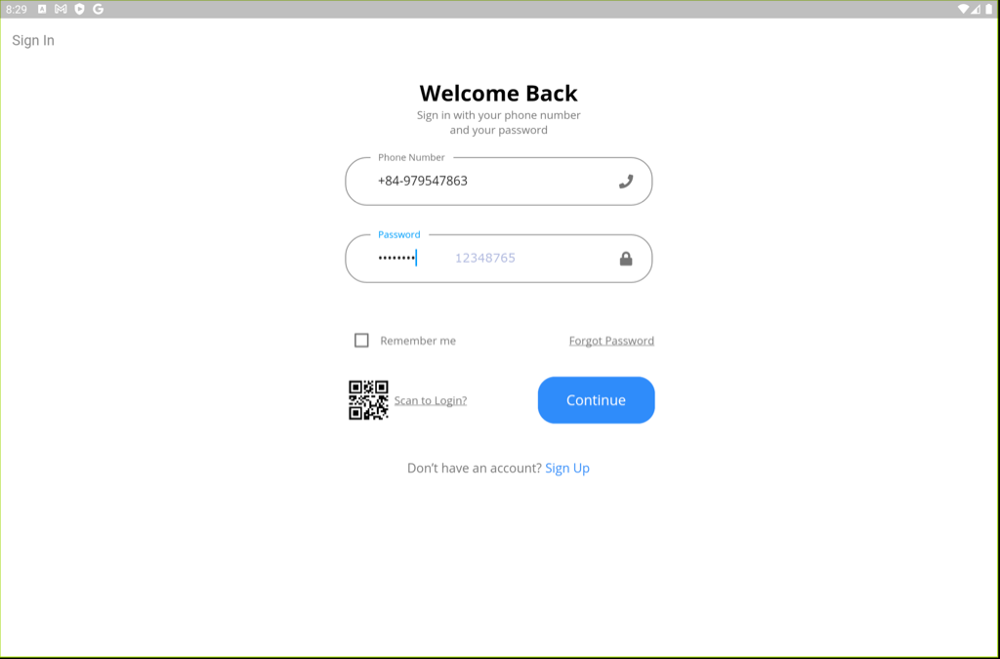
- Add your stores in Store Owner account.
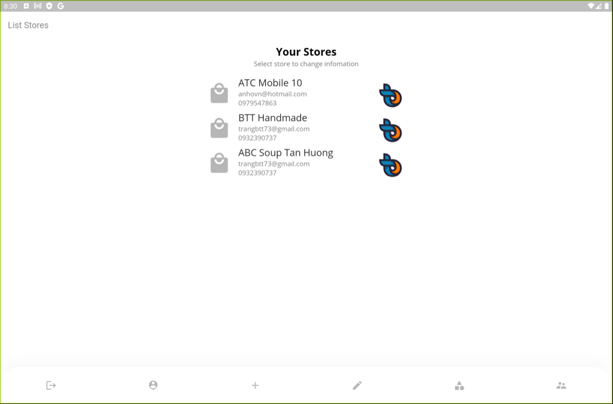
- Go to Store's staffs list, add more staffs for your store:
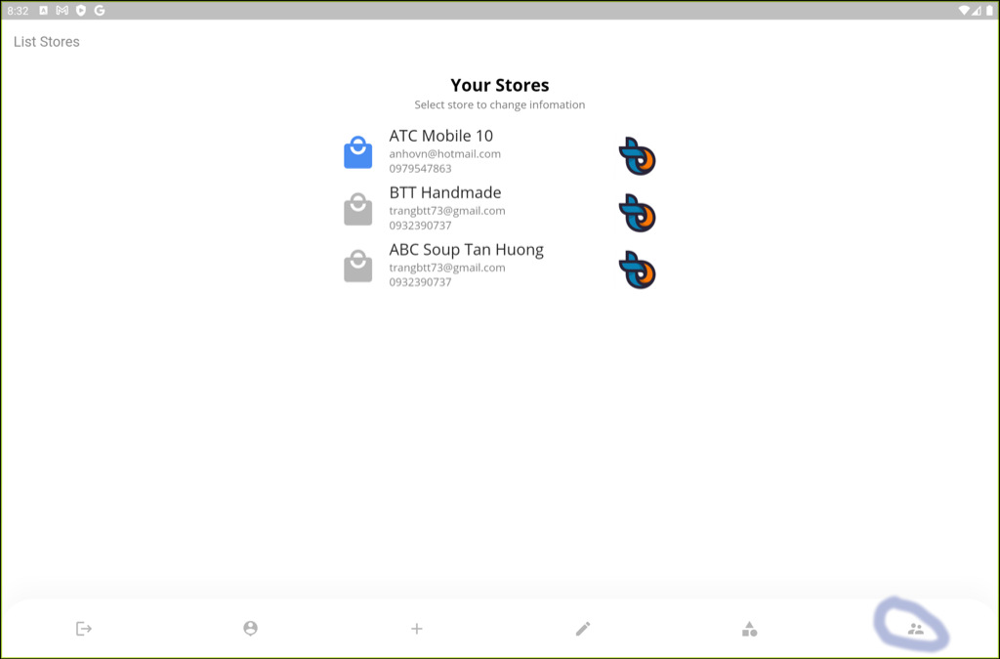
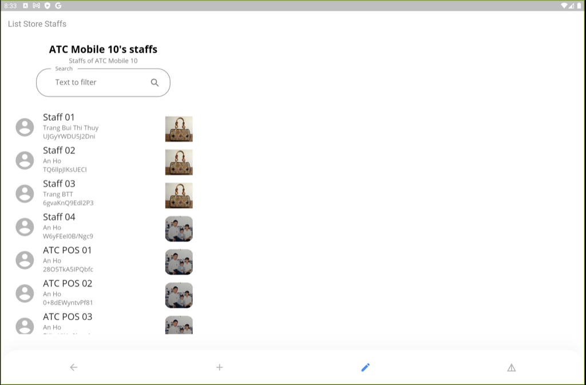
- With each store's staff, you need to check/change Access codes:
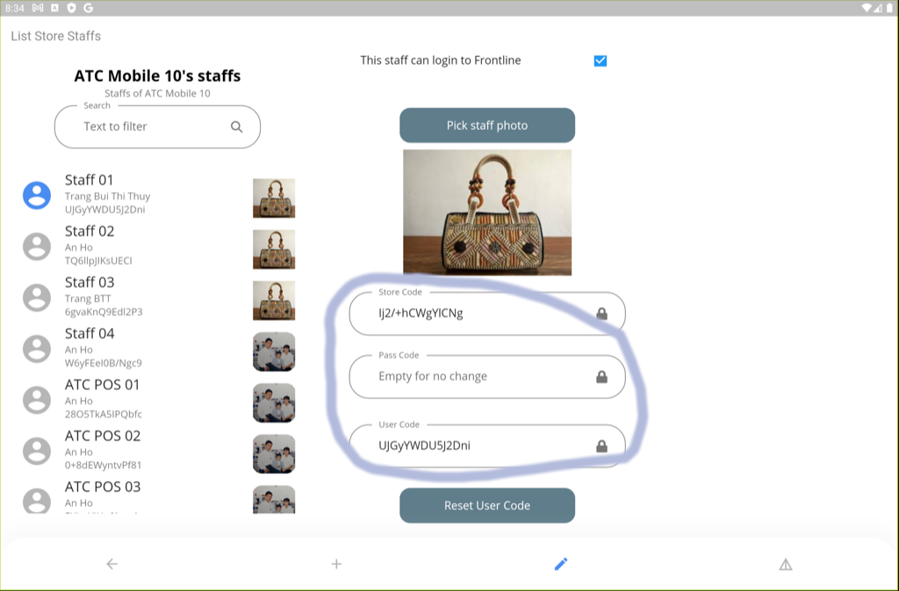
"Store Code", "User Code" and "Pass Code" fields will be used to login into ATC Store Function apps like
ATC Store POS
-
Assign functions to Staffs:
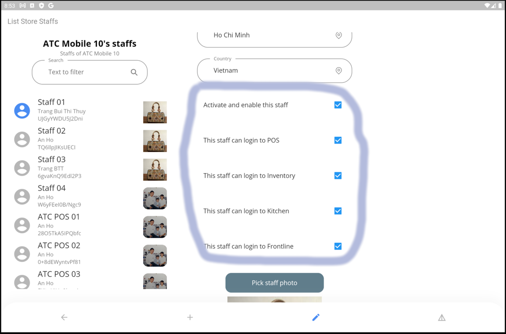
For staffs on POS line, you need to enable POS access so that they can login into
ATC Store POS.
-
You can print staff login card:
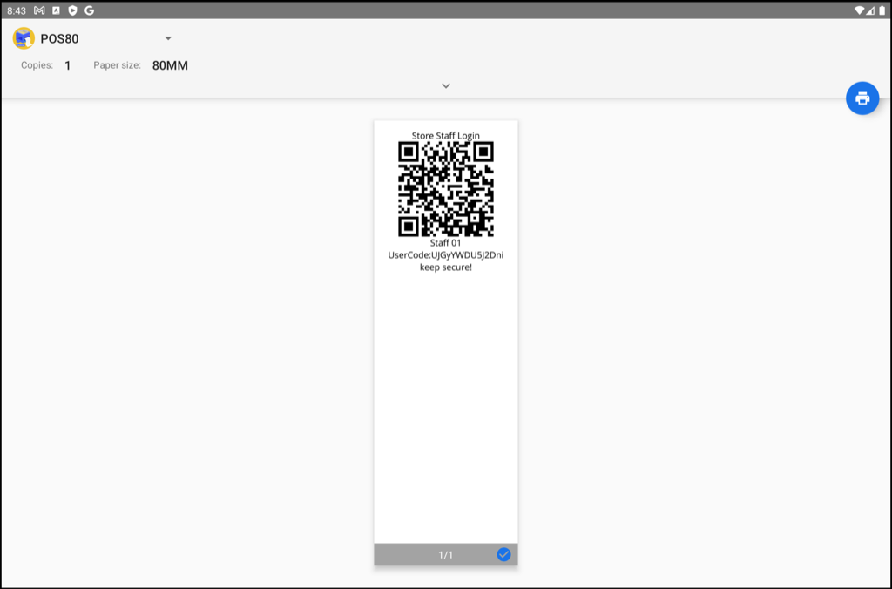
this login card can be used to login into ATC Store POS
-
After you have staff login credentials for POS, go back to ATC Store POS
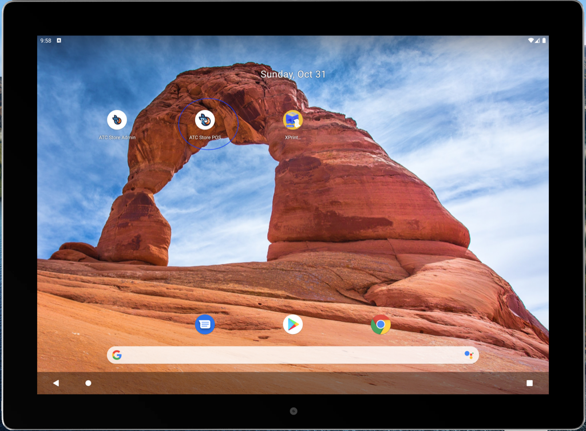
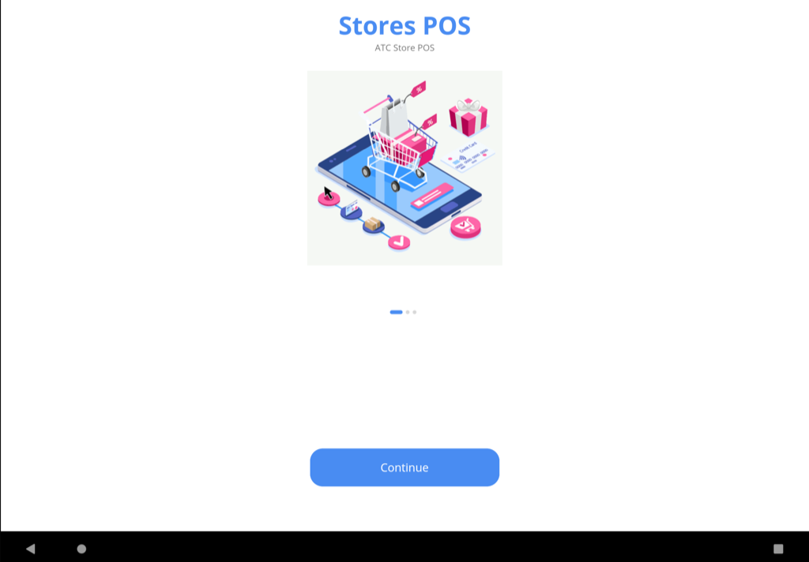
-
Login into ATC Store POS with your printed login card:

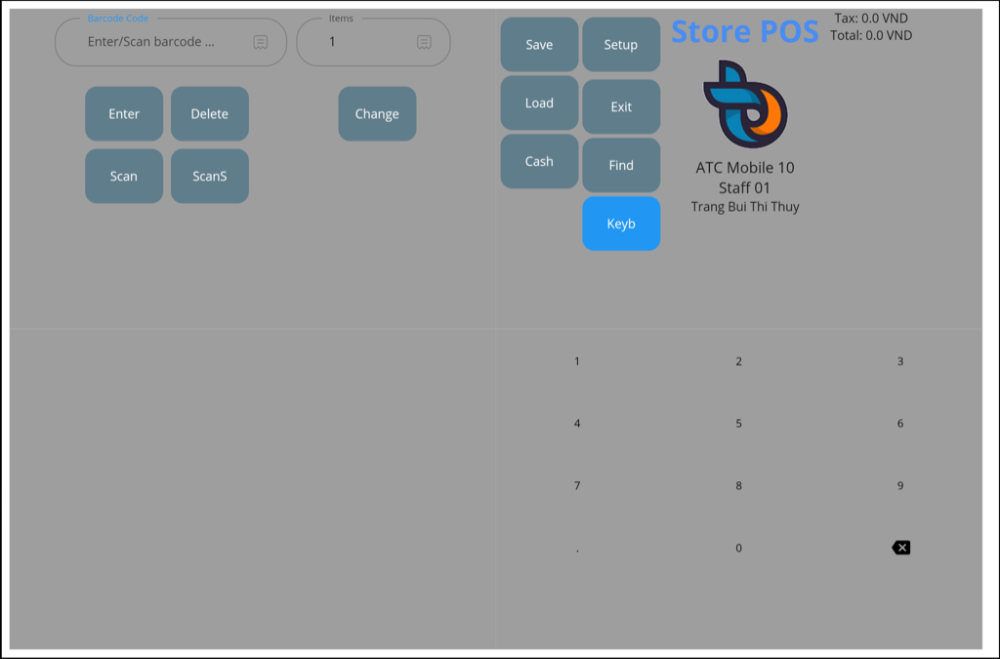
-
ATC Store POS screens:
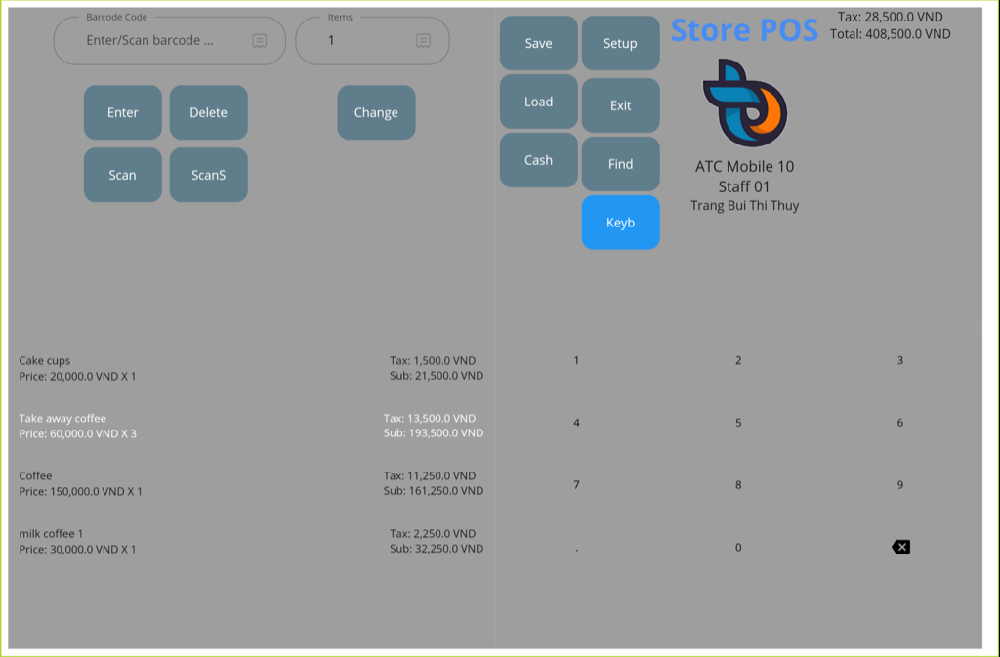
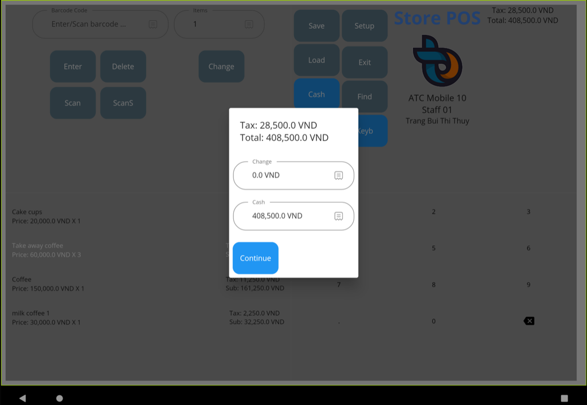
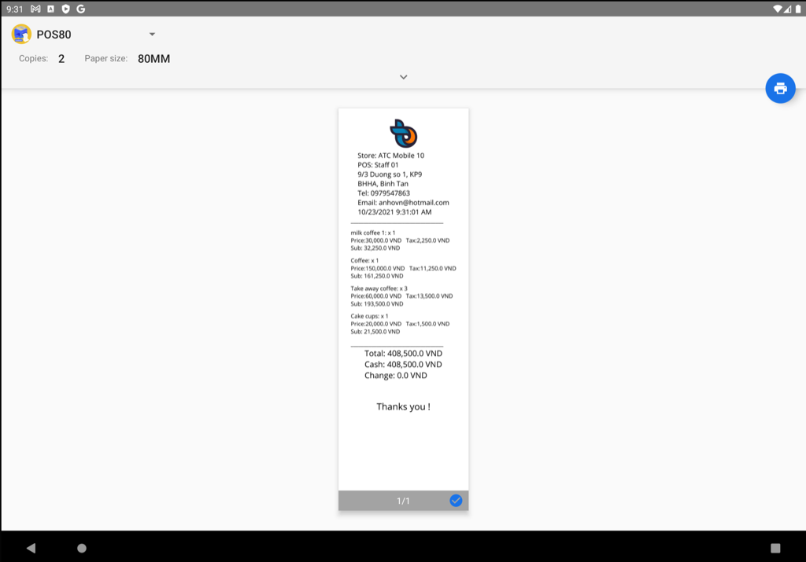
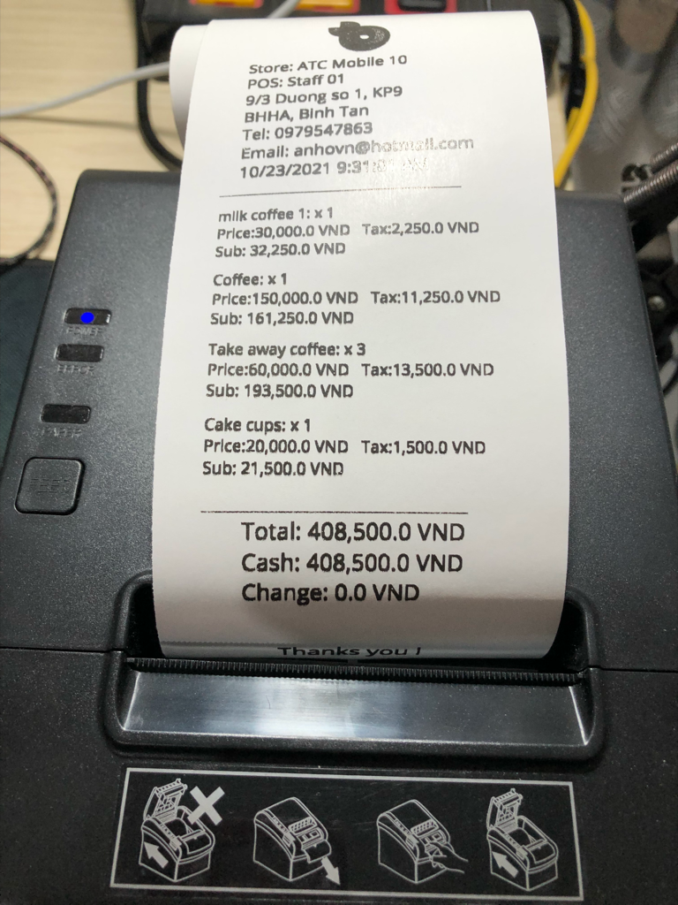
Contact Us
If you have any questions or suggestions about my
ATC Store POS,
do not hesitate to contact me at atcmobi998@gmail.com.